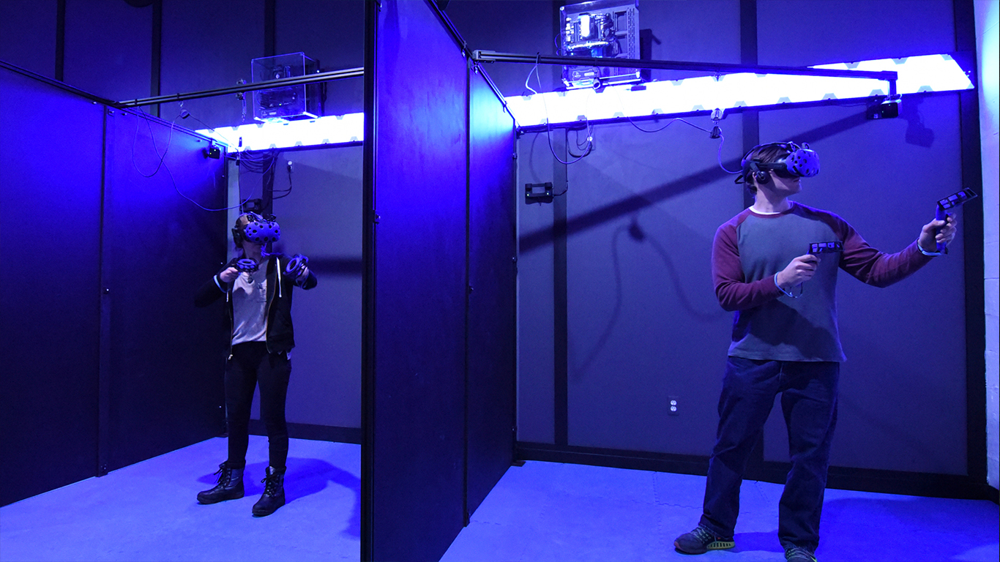
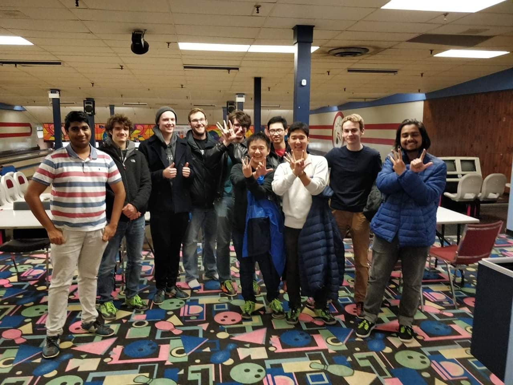

On the weekend of May 18th, 2019, various universities came together to present their airlock design at UBC’s Mars Colony Project Airlock Challenge. WatLock proudly won the best presentation award after months of hard work! Special thanks to Adam, Yifei, Johnny, Alyssa, and Logan who made sure that the presentation was flawless hours before the competition. What’s next? Building a prototype for our airlock design to compete in May 2020!
The team went to CTRL V, Canada's first virtual reality arcade!
Every successful team needs some time off. The team went to Victoria Bowling Lanes and had a blast!
Of course such a large task needed backing from more experienced hands... Professor Ting Tsui decided to give this effort a chance when he joined the WatLock team. Learn more about Professor Tsui and his contributions to the world of science!
After a discussion amongst two old friends about what they wish to accomplish during their time in university, the duo decide to embark on the challenge set forth by the University of British Columbia and decide to form WatLock.